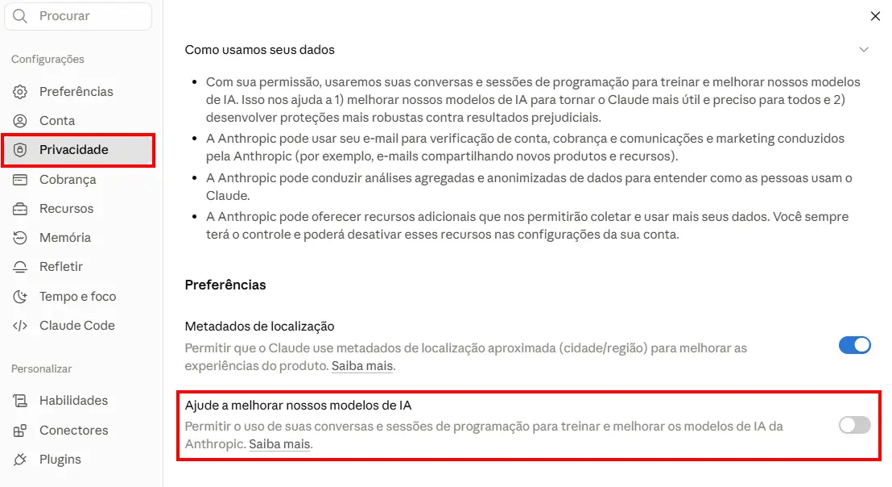

Por muito tempo, a ideia de "automação inteligente" pareceu reservada a empresas com orçamento de tecnologia, times de dados e assinaturas corporativas caras. Isso mudou com a chegada das Skills do Claude, um recurso também disponível no plano gratuito (Free) da Anthropic. Na prática, isso significa que qualquer pequeno escritório, autônomo ou pequena empresa pode configurar um "modo de trabalho" específico dentro do Claude "sem custo de assinatura" para tarefas recorrentes como montar relatórios, organizar dados de atendimento ou estruturar decisões de gestão.
O objetivo deste artigo é explicar de forma simples o que são Skills, por que esse recurso importa especialmente para pequenos negócios brasileiros, quais riscos de segurança da informação e privacidade envolvem seu uso e como aplicá-las de forma responsável, usando como exemplo prático uma skill real de dashboard de métricas para escritórios de advocacia, mas com aplicação para qualquer negócio que lida com CRM, atendimento e financeiro.
O que são as Skills do Claude?
De forma simples, uma Skill é um conjunto de instruções, modelos e regras de negócio salvos em um arquivo (o chamado SKILL.md) que o Claude carrega automaticamente quando identifica que uma tarefa se encaixa naquele contexto. Em vez de reescrever o mesmo prompt longo toda vez (explicando fórmulas, formato de relatório, o que pode e o que não pode aparecer no resultado), a pessoa cria a skill uma única vez, e o Claude passa a aplicá-la sempre que o assunto aparecer numa conversa.
Isso é diferente de simplesmente "pedir para a IA fazer alguma coisa". Uma skill bem construída define:
- Quando acionar aquele comportamento (e quando não acionar).
- Regras fixas que não podem ser quebradas, mesmo que o pedido pareça exigir isso.
- Formato de saída padronizado, para que o resultado seja sempre consistente.
- Limites de escopo, evitando que a IA "invente" respostas fora do que foi combinado.
Um exemplo comum ilustra bem esse conceito: uma skill de "Dashboard de métricas do escritório". Ela não pede apenas "monte um relatório de vendas". Ela define fórmulas explícitas para cada indicador, exige que todo número venha com a fonte de onde saiu, proíbe a exposição de dados pessoais identificáveis no relatório e obriga que cada gargalo identificado tenha um responsável e um prazo de ação. Ou seja: a skill não é um prompt, é uma política de trabalho encapsulada.
Por que isso importa hoje, especialmente para pequenas empresas?
Nos últimos anos, ferramentas de automação como Power Automate, n8n e Power Apps se popularizaram justamente por permitirem que empresas sem equipe técnica dedicada automatizassem processos. O problema é que a maioria dessas ferramentas ainda exige alguma curva de aprendizado técnica: conectar APIs, montar fluxos visuais, lidar com autenticação.
As Skills do Claude reduzem essa barreira de um jeito diferente: em vez de montar um fluxo técnico, a pessoa descreve, em linguagem natural e estruturada, como o trabalho deve ser feito e o Claude assume a execução. Isso é particularmente relevante para:
- Micro e pequenas empresas que não têm orçamento para um analista de dados ou um especialista em BI.
- Profissionais liberais (advogados, contadores, consultores, dentistas, clínicas) que já usam CRM ou planilhas, mas não sabem transformar esses dados em decisão.
- Empreendedores que já usam o Claude no dia a dia, mas de forma dispersa, sem padronização.
O fato desse recurso estar disponível no plano gratuito muda o cálculo de custo-benefício: uma empresa pode testar, estruturar e até operacionalizar um fluxo de decisão gerencial sem comprometer orçamento, antes de decidir se vale investir num plano pago para ganhar mais capacidade de uso.
O que o plano Free realmente oferece (e o que fica de fora)?
É importante ser preciso aqui, porque a confusão entre planos costuma gerar expectativa errada e, no contexto de proteção de dados, expectativa errada frequentemente vira risco.
Incluso no plano Free
- Conversa via web, iOS, Android e aplicativo desktop
- Busca na web
- Criação de arquivos e execução de código
- Artifacts
- Skills (inclusive skills personalizadas)
- Conectores remotos via MCP
- Modo de voz
- Memória entre conversas
- Raciocínio estendido
Só nos planos pagos
- Claude Code
- Cowork
- Projects
- Claude Design
- Claude Science
- Integrações diretas com Chrome e Microsoft 365
- Maior volume de uso dentro da janela de sessão
Na prática, isso quer dizer que uma pequena empresa pode, sim, habilitar a execução de código e criar uma skill personalizada de gestão no plano gratuito. O que ela vai sentir primeiro, se o uso crescer, é o limite de mensagens dentro da janela mínima de cinco horas, não uma restrição de funcionalidade da skill em si.
Essa distinção é importante para o planejamento: a empresa pode validar o processo inteiro (criação da skill, teste, ajuste de regras) sem custo, e só considerar upgrade quando o volume de uso justificar.
Um ponto de atenção à parte: suas conversas podem virar dado de treinamento
Antes de colocar uma skill para operar com dados de clientes no plano Free, vale entender um detalhe de privacidade que é frequentemente ignorado: desde a mudança de política de setembro de 2025, contas de consumidor da Anthropic — Free, Pro e Max — podem ter suas conversas usadas para treinar e aprimorar modelos futuros, salvo se a pessoa desativar isso manualmente na opção de treinamento dentro de "Configurações de privacidade" da conta.
Isso significa que, ao usar uma skill de dashboard de métricas conectada a dados reais de CRM ou financeiro, o conteúdo trocado na conversa pode, em tese, ser incorporado ao material usado para melhorar os modelos da Anthropic — a menos que o usuário tenha ativamente desligado essa opção.
Um ponto de atenção à parte: suas conversas podem virar dado de treinamento
Antes de colocar uma skill para operar com dados de clientes no plano Free, vale entender um detalhe de privacidade que é frequentemente ignorado: desde a mudança de política de setembro de 2025, contas de consumidor da Anthropic — Free, Pro e Max — podem ter suas conversas usadas para treinar e aprimorar modelos futuros, salvo se a pessoa desativar isso manualmente na opção de treinamento dentro de "Configurações de privacidade" da conta.
Isso significa que, ao usar uma skill de dashboard de métricas conectada a dados reais de CRM ou financeiro, o conteúdo trocado na conversa pode, em tese, ser incorporado ao material usado para melhorar os modelos da Anthropic — a menos que o usuário tenha ativamente desligado essa opção.

Desativar o treinamento reduz o risco, mas não é uma garantia absoluta
Desligar a opção de uso de conversas para treinamento nas configurações de privacidade é a medida recomendada e reduz também o prazo de retenção dos dados de anos para cerca de 30 dias. No entanto, é importante ter uma expectativa realista: essa configuração não é uma blindagem total. A própria política da Anthropic prevê que conversas sinalizadas por seus sistemas de segurança para revisão podem continuar sendo usadas para treinar e aprimorar modelos de segurança, independentemente da preferência de treinamento escolhida pelo usuário e os critérios que acionam essa sinalização não são divulgados publicamente em detalhe. Em outras palavras, desativar o treinamento no plano Free diminui significativamente a exposição, mas não elimina por completo a possibilidade de que algum trecho de conversa seja utilizado em circunstâncias específicas.
Para empresas que vão operar skills com dados reais de clientes, a recomendação prática é dupla: primeiro, desativar manualmente a opção de treinamento na conta usada para esse fim; segundo, tratar essa configuração como uma camada adicional de proteção e não como substituta das boas práticas já descritas neste artigo como nunca expor CPF, telefone ou e-mail nos relatórios gerados. Para operações que exigem garantias contratuais mais fortes de que os dados nunca serão usados para treinamento, vale considerar planos empresariais (Claude for Work) ou o uso via API, que seguem políticas de retenção e treinamento diferentes das contas de consumidor. Como essas políticas de privacidade têm mudado com alguma frequência, o ideal é sempre conferir a configuração atual diretamente em privacy.claude.com antes de decidir o que conectar à ferramenta.
Riscos envolvidos: por que uma skill "livre" pode virar problema de privacidade
Aqui entra a parte que mais interessa a quem pensa em segurança da informação e LGPD: uma skill mal desenhada pode transformar uma ferramenta de produtividade em um vazamento silencioso de dados pessoais.
Isso acontece porque, ao conectar o Claude a fontes de dados reais: CRM, planilhas de atendimento, sistemas financeiros, a IA passa a ter acesso a informações que, dependendo de como são processadas e apresentadas, podem se tornar dado pessoal sob a ótica da LGPD: nome, telefone, e-mail, histórico de atendimento, informações de pagamento.
Os riscos mais comuns observados em fluxos de automação com IA aplicados à gestão são:
1. Exposição de dados identificáveis em relatórios que circulam
Um painel semanal que deveria mostrar apenas números agregados pode, por descuido na instrução, incluir nome e telefone de clientes específicos e muitas vezes, esse relatório é compartilhado por e-mail ou WhatsApp com sócios, investidores ou parceiros, ampliando a superfície de exposição.
2. Falta de rastreabilidade sobre a origem do dado
Quando a IA "preenche lacunas" com estimativas sem deixar isso explícito, decisões de negócio passam a ser tomadas sobre premissas não verificadas e, em um cenário de auditoria ou questionamento de titular de dados, não há como reconstituir de onde veio cada número.
3. Conectores com permissão de escrita sem controle
Se uma skill tem acesso a um sistema de CRM e pode alterar etapas, tags ou anotações, um comando mal interpretado pode gerar alterações não autorizadas na base de dados de clientes, um problema tanto operacional quanto de governança.
4. Concentração de dados sensíveis em um único fluxo de IA sem política de acesso
Se qualquer pessoa da equipe pode acionar a skill e ver dados financeiros e de clientes, a empresa perde o controle de quem acessa o quê, o que contraria o princípio de necessidade e minimização previsto na LGPD.
5. Uso de benchmarks externos como se fossem metas internas
Isso não é um risco de dados pessoais, mas é um risco de gestão real: decisões tomadas sobre números de referência genéricos da internet, sem validação, podem levar a metas irreais e decisões equivocadas de investimento.
Uma skill de dashboard de métricas bem desenhada já antecipa boa parte desses riscos: ela proíbe explicitamente a inclusão de CPF, telefone, e-mail ou endereço em relatórios; exige que toda métrica tenha fonte declarada; separa claramente o que veio de conector do que é hipótese; e distingue leitura (livre) de escrita (que exige confirmação explícita). Esse é exatamente o padrão de desenho que qualquer empresa deveria exigir ao criar suas próprias skills, especialmente quando lidam com dados de clientes.
Impactos reais no negócio
Quando bem implementada, uma skill de automação de decisão gera impacto direto em três frentes:
Ganhos observados com uma skill de gestão bem desenhada
- Velocidade de decisão: em vez de esperar o fechamento contábil do mês para entender se a captação de clientes está saudável, o gestor recebe, toda semana, um painel com semáforo indicando o que está fora da meta e o que precisa de ação imediata.
- Padronização de critério: um dos problemas mais comuns em pequenas empresas é que cada pessoa calcula "taxa de conversão" de um jeito diferente. Uma skill com fórmula explícita elimina essa ambiguidade: o número sempre significa a mesma coisa, independentemente de quem pediu o relatório.
- Redução de vaidade métrica: empresas pequenas frequentemente acompanham números que não geram decisão nenhuma: curtidas, visualizações, total de mensagens enviadas. Uma skill bem desenhada força a distinção entre o que é vaidade e o que efetivamente move receita, deixando claro, por regra, o que não deve ser tratado como métrica relevante.
Do ponto de vista de segurança da informação, o impacto positivo também existe: ao formalizar regras explícitas de anonimização e de tratamento de dado ausente, a empresa reduz a dependência de "bom senso individual" de quem está operando a ferramenta no dia a dia, que é exatamente o tipo de controle que reguladores e auditores de LGPD valorizam.
Exemplos práticos de uso no plano Free
Para tornar isso concreto, veja três cenários de uso de skills gratuitas que pequenas empresas brasileiras já conseguem aplicar hoje:
Escritório de advocacia ou consultoria
Uma skill de dashboard semanal que cruza dados de CRM, atendimento via WhatsApp e financeiro, sempre seguindo a mesma estrutura: número, leitura do número, ação da semana. Isso substitui reuniões longas de "vamos ver como estamos" por um documento objetivo que já chega com plano de ação.
Clínica ou consultório
Uma skill para monitorar taxa de no-show de consultas, tempo médio de resposta a mensagens e inadimplência de convênios ou particulares com o mesmo cuidado de nunca expor nome de paciente em relatório que circula entre sócios.
Pequeno e-commerce ou prestador de serviço
Uma skill que organiza dados de funil comercial (visitas, leads, propostas, vendas) e identifica em qual etapa a conversão está caindo, sem depender de um analista dedicado.
Em todos os casos, o ponto comum é: a skill não substitui o julgamento humano, ela padroniza o processo de chegar até a decisão e, quando bem desenhada, protege a empresa de expor dado que não deveria circular.
Boas práticas de segurança ao criar e usar Skills
Para quem quer adotar esse recurso de forma responsável, especialmente lidando com dados de clientes, algumas práticas são essenciais:
Checklist de segurança para skills de gestão
Use esta lista antes de colocar uma skill para operar com dados reais de clientes.
- Nunca deixe a skill inventar dado. Toda informação ausente deve ser marcada como pendência, nunca preenchida com suposição disfarçada de fato.
- Defina explicitamente o que não pode aparecer no resultado. CPF, telefone, e-mail e endereço de clientes não devem sair em relatórios de gestão, salvo pedido explícito e para uso estritamente interno.
- Separe leitura de escrita em conectores. Consultar dados deve ser livre; alterar dados em sistemas de CRM ou financeiros deve sempre exigir confirmação explícita na conversa.
- Documente a fonte de cada número. Isso não é apenas boa prática de gestão, é o que permite, em caso de dúvida ou auditoria, reconstituir de onde veio cada informação usada em uma decisão.
- Restrinja quem aciona a skill em ambientes com dado sensível. Mesmo em empresas pequenas, vale definir quem tem acesso ao conector que puxa dados de clientes.
- Revise periodicamente a skill. Regras de negócio mudam e uma skill desatualizada pode aplicar critérios que não fazem mais sentido para a realidade atual da empresa.
Onde encontrar skills prontas: recomendação de repositório
Para quem quer começar a partir de exemplos já testados, em vez de criar uma skill do zero, a própria Anthropic mantém um repositório público oficial: github.com/anthropics/skills. Nele estão disponíveis skills de referência cobrindo desde criação de documentos e planilhas até fluxos corporativos de comunicação e branding, cada uma com seu SKILL.md servindo tanto para uso direto quanto como modelo de boas práticas para quem for construir uma skill própria, como uma de dashboard de métricas para gestão.
Alerta de segurança sobre skills de comunidade
Além do repositório oficial, existe um ecossistema crescente de skills de comunidade, mantidas por desenvolvedores independentes. Elas podem ser úteis, mas devem ser tratadas como código de terceiros ou seja, revisadas antes do uso, especialmente se a empresa pretende conectá-las a dados reais de clientes, CRM ou financeiro. O mesmo cuidado de governança de dados discutido neste artigo vale, com ainda mais atenção, para skills baixadas de repositórios não oficiais: verifique o que a skill instrui o Claude a fazer, se ela solicita algum tipo de conexão externa, e nunca aponte uma skill não verificada para uma base de dados sensível sem antes testá-la em ambiente controlado.
Conclusão
A utilização de Skills no plano gratuito do Claude representa uma mudança real: pequenas empresas e profissionais autônomos, que antes dependiam de ferramentas caras ou de conhecimento técnico avançado para automatizar decisões de gestão, agora podem estruturar esse processo sem custo de assinatura. O ganho de produtividade é evidente: relatórios padronizados, decisões mais rápidas, menos tempo perdido em planilhas manuais.
Mas esse ganho só é seguro quando a skill é desenhada com os mesmos princípios que orientam qualquer tratamento responsável de dado: transparência sobre a origem da informação, minimização do que é exposto, separação clara entre o que é fato e o que é hipótese, e controle sobre quem pode acessar e alterar dados sensíveis. Empresas que tratam a criação de uma skill como uma decisão de governança (e não apenas como um atalho de produtividade) colhem o benefício da automação sem abrir uma nova porta de risco à privacidade de seus clientes.